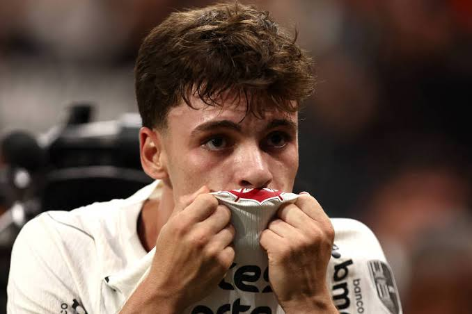
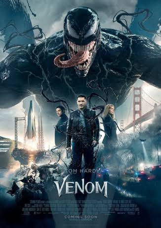

é um meio-campista brasileiro de 21 anos que joga pelo Corinthians. Revelado nas categorias de base do clube, destacou-se ao vencer e ser eleito o melhor jogador da Copa São Paulo de Futebol Júnior em 2024

Sem Volta Para Casa, Peter Parker vive completamente sozinho em Nova York, tendo se apagado da memória de todos. Dedicado a ser um herói em tempo integral, ele enfrenta uma evolução física inesperada enquanto investiga uma perigosa teia de crimes.

o jornalista investigativo Eddie Brock perde o emprego e a noiva após tentar expor os experimentos ilegais da Fundação Vida. Ao invadir o laboratório, ele é contaminado por um simbionte alienígena. Juntos, eles viram o anti-herói Venom e precisam deter uma ameaça da mesma espécie
é um dos maiores jogadores de futebol da história do Brasil. Nascido em Mogi das Cruzes em 1992, ele brilhou no Santos, fez história no Barcelona e no Paris Saint-Germain, e tornou-se o maior artilheiro da Seleção Brasileira em gols oficiais junto à FIFA.
Arthur Fleck (Joaquin Phoenix) é um homem pobre, com problemas mentais e riso involuntário que trabalha como palhaço. Após ser demitido e ignorado por uma sociedade fria em Gotham City, ele comete assassinatos no metrô que iniciam uma violenta revolta popular contra a elite, transformando-se no caótico e icônico vilão